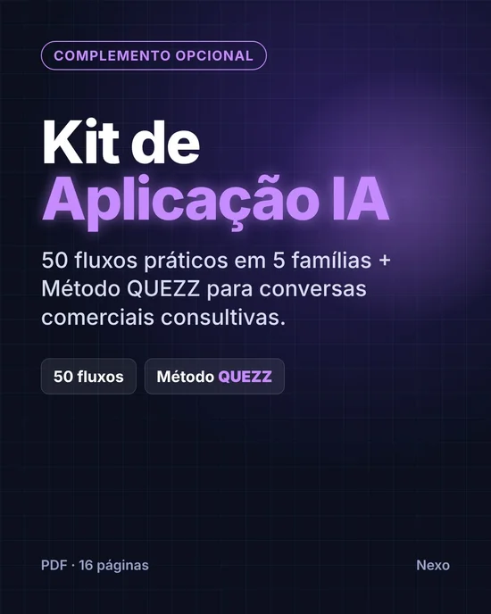

O que vem no kit
- 50 fluxos em cinco famílias para consultar conforme a tarefa.
- Uma estrutura por fluxo com quando usar, o que fornecer, o que esperar, uma instrução-base e um cuidado de qualidade.
- Método QUEZZ para aplicar a mesma estrutura a conversas comerciais consultivas.